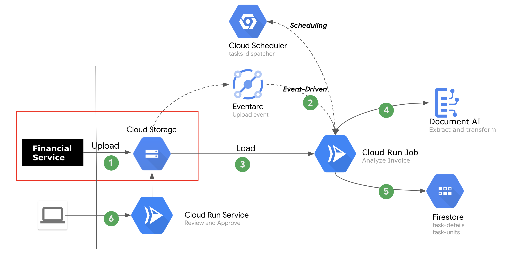

Description
We assusme a scenario, which includes following goals:
- Rapidly refactor exsiting workflows
- Integrate with existing system without harshness
- Leverage the inteligence power in Google Cloud
- Highly scalable and flexible
- Support event-driven or scheduled-task
Accomplish those goals we designed a serverless based architecture with the least effort and most cost-effective manner.
High-level Architecture

Prerequisite
# Enable services API in gcloud if not done yet
gcloud services enable cloudbuild.googleapis.com \
eventarc.googleapis.com \
logging.googleapis.com \
pubsub.googleapis.com \
run.googleapis.com \
workflows.googleapis.com
Guide
# 1. Initial environment variables
export GOOGLE_CLOUD_PROJECT=play-with-anthos-340801
export BUCKET=$GOOGLE_CLOUD_PROJECT-demo-invoices
export PROCESSOR_NAME=invoice-parser-us
export REGION=us-central1
# 2. Create bucket for storage the files of invoice
gsutil mb -l $REGION gs://$BUCKET
# 3. Create the processor from Document AI
cat << __EOF__ > request.json
{
"type": "INVOICE_PROCESSOR",
"displayName": "${PROCESSOR_NAME}"
}
__EOF__
curl -X POST \
-H "Authorization: Bearer $(gcloud auth application-default print-access-token)" \
-H "Content-Type: application/json; charset=utf-8" \
-d @request.json \
"https://us-documentai.googleapis.com/v1/projects/$GOOGLE_CLOUD_PROJECT/locations/us/processors" > out.txt
PROCESSOR_ID=`cat out.txt |jq -r ".name"|awk -F"/" '{print $6}'`
curl -X GET \
-H "Authorization: Bearer $(gcloud auth application-default print-access-token)" \
"https://us-documentai.googleapis.com/v1/projects/$GOOGLE_CLOUD_PROJECT/locations/us/processors/$PROCESSOR_ID"
# 4. Provision Cloud Run Services to uploader
gcloud run deploy uploader --region $REGION --quiet \
--source uploader/ \
--set-env-vars BUCKET=$BUCKET \
--allow-unauthenticated
# 5. Provision Cloud Run Services to view/approve
gcloud run deploy reviewer --region $REGION --quiet \
--source reviewer/ \
--set-env-vars BUCKET=$BUCKET \
--allow-unauthenticated
# 6. Provision Cloud Run Jobs to process invoices. Run Service to kick off Job
gcloud run deploy kicker --region $REGION --quiet \
--source kicker/ \
--set-env-vars JOB_NAME=invoice-processing \
--allow-unauthenticated
gcloud beta run jobs create invoice-processing \
--image gcr.io/$GOOGLE_CLOUD_PROJECT/invoice-processor \
--region $REGION \
--set-env-vars BUCKET=$BUCKET \
--set-env-vars PROCESSOR_ID=$PROCESSOR_ID
# 7. Create a trigger to Cloud Run Jobs
SERVICE_ACCOUNT="$(gsutil kms serviceaccount -p play-with-anthos-340801)"
gcloud projects add-iam-policy-binding play-with-anthos-340801 \
--member="serviceAccount:${SERVICE_ACCOUNT}" \
--role='roles/pubsub.publisher'
gcloud eventarc triggers create bucket-events-trigger-run-kicker \
--destination-run-service=kicker \
--destination-run-region=us-central1 \
--event-filters="type=google.cloud.storage.object.v1.finalized" \
--event-filters="bucket=$BUCKET" \
--service-account=828493099439-compute@developer.gserviceaccount.com \
--location=us
# 8. Validation
# Copy files into bucket and triggering the process
gsutil cp -r incoming/*.pdf gs://$BUCKET/incoming
gsutil cp -r incoming/brass-curve-1311.pdf gs://$BUCKET/incoming/01-brass-curve-1311.pdf
# Or use uploader to upload a file
open `gcloud run services describe uploader --region $REGION --format json|jq -r ".status.url"`
# Checkout demo through simple UI
open `gcloud run services describe reviewer --region $REGION --format json|jq -r ".status.url"`
References
- Cloud Run
- Document AI
- The Run Jobs was forked from Google Cloud jobs-demo